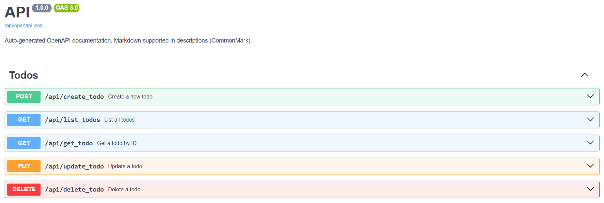

Usage Guide: azure-functions-openapi¶
This guide walks you through documenting Python Azure Functions using OpenAPI (Swagger) via azure-functions-openapi.
It focuses on practical usage based on a full-featured Todo API example.
🔗 For installation and setup, see the Installation Guide. 🔍 For full API reference of the decorator, see the
@openapiAPI Reference.
Table of Contents¶
- @openapi Decorator
- Pydantic Models
- Parameters (Query / Path / Header)
- Response Schema Options
- HTTP Methods and Routing
- Exposing OpenAPI Docs
- JSON and YAML Output
- Swagger UI Configuration
- End-to-End Example: Todo API
@openapi Decorator¶
Use the @openapi decorator to attach OpenAPI metadata to each function.
This metadata is used at runtime to generate:
/openapi.json: OpenAPI schema in JSON format/openapi.yaml: (optional) YAML version of the schema/docs: Swagger UI
See the full list of supported parameters in the API Reference.
Example¶
@openapi(
summary="Create a new todo",
description="Add a new todo item with a title.",
tags=["Todos"],
operation_id="createTodo",
route="/api/create_todo",
method="post",
request_model=TodoCreateRequest,
response_model=TodoResponse,
response={
201: {"description": "Todo created"},
400: {"description": "Invalid request"}
}
)
Pydantic Models¶
Define request and response models using Pydantic v1 or v2.
These models are converted into OpenAPI-compatible schemas and embedded under components.schemas in the spec.
class TodoCreateRequest(BaseModel):
title: str
class TodoResponse(BaseModel):
id: int
title: str
done: bool
✅ Pydantic v1 and v2 are both supported. The library detects the installed version automatically.
Parameters (Query / Path / Header)¶
Use the parameters argument to define additional request parameters such as query strings, path variables, or headers.
parameters=[
{
"name": "id",
"in": "query", # or: path, header
"required": True,
"description": "Todo item ID",
"schema": {"type": "integer"}
}
]
Each parameter follows the OpenAPI 3.0 format.
Response Schema Options¶
There are two ways to define responses:
-
response_model=TodoResponseAutomatically creates schema for200status code -
response={...}Manually define multiple response codes and content types
You can use both together to document a default response and special cases (e.g., 400, 404).
HTTP Methods & Routing¶
To correctly reflect your API in the OpenAPI spec, set both:
route="..."→ path exposed in specmethod="..."→ HTTP verb (GET, POST, PUT, DELETE, etc.)
Also ensure your Azure Function is decorated with the corresponding route:
@app.route(route="create_todo", methods=["POST"])
Exposing OpenAPI Docs¶
These endpoints must be manually added to your FunctionApp:
@app.route(route="openapi.json")
def openapi_spec(req: func.HttpRequest) -> func.HttpResponse:
return func.HttpResponse(get_openapi_json())
@app.route(route="docs")
def swagger_ui(req: func.HttpRequest) -> func.HttpResponse:
return render_swagger_ui()
/openapi.yamlalso available if you installPyYAML
JSON & YAML Output¶
| Route | Format | Description |
|---|---|---|
/openapi.json |
JSON | Full OpenAPI schema for API consumers |
/openapi.yaml |
YAML | (Optional) Easier to read and edit manually |
/docs |
Swagger UI | Developer-friendly interactive UI |
Swagger UI Configuration¶
from azure_functions_openapi.swagger_ui import render_swagger_ui
response = render_swagger_ui(openapi_url="/api/openapi.json", title="API Docs")
Security Configuration¶
from azure_functions_openapi.swagger_ui import render_swagger_ui
custom_csp = "default-src 'self'; script-src 'self'"
response = render_swagger_ui(custom_csp=custom_csp)
End-to-End Example: Todo API¶
The Todo example implements the following operations:
| Function | Method | Route | Summary |
|---|---|---|---|
create_todo |
POST | /api/create_todo |
Create a new todo |
list_todos |
GET | /api/list_todos |
List all todos |
get_todo |
GET | /api/get_todo |
Get todo by ID |
update_todo |
PUT | /api/update_todo |
Update todo |
delete_todo |
DELETE | /api/delete_todo |
Delete todo |
Each function demonstrates:
- How to use
@openapito define documentation metadata - Parameterized endpoints (
query,header) - Typed request/response models with Pydantic
- Swagger UI output for all routes
You can import the generated spec into tools like:
- Postman
- SwaggerHub
- Azure API Management
Happy documenting!¶
Function Endpoints¶
Once the app is running (func start), the following routes will be available:
| Function | Method | Route | Description |
|---|---|---|---|
create_todo |
POST | http://localhost:7071/api/create_todo | Create a new todo |
delete_todo |
DELETE | http://localhost:7071/api/delete_todo | Delete a todo by ID |
get_todo |
GET | http://localhost:7071/api/get_todo | Get todo by ID |
list_todos |
GET | http://localhost:7071/api/list_todos | List all todos |
update_todo |
PUT | http://localhost:7071/api/update_todo | Update a todo |
openapi_spec |
GET | http://localhost:7071/api/openapi.json | OpenAPI JSON spec |
openapi_yaml_spec |
GET | http://localhost:7071/api/openapi.yaml | OpenAPI YAML spec |
swagger_ui |
GET | http://localhost:7071/api/docs | Swagger UI |
Sample OpenAPI Output (JSON)¶
Example snippet from /openapi.json:
{
"openapi": "3.0.0",
"info": {
"title": "API",
"version": "1.0.0"
},
"paths": {
"/api/create_todo": {
"post": {
"summary": "Create a new todo",
"description": "Add a new todo item with a title.",
"operationId": "createTodo",
"tags": ["Todos"],
"requestBody": {
"required": true,
"content": {
"application/json": {
"schema": {
"title": "TodoCreateRequest",
"type": "object",
"properties": {
"title": { "type": "string" }
},
"required": ["title"]
}
}
}
},
"responses": {
"201": { "description": "Todo created successfully" },
"400": { "description": "Invalid request" },
"200": {
"description": "Successful Response",
"content": {
"application/json": {
"schema": {
"title": "TodoResponse",
"type": "object",
"properties": {
"id": { "type": "integer" },
"title": { "type": "string" },
"done": { "type": "boolean" }
},
"required": ["id", "title", "done"]
}
}
}
}
}
}
}
}
}
This output can be imported into tools like SwaggerHub, Postman, or Azure API Management.
Swagger UI Preview¶
Below is a preview of the automatically generated Swagger UI:
